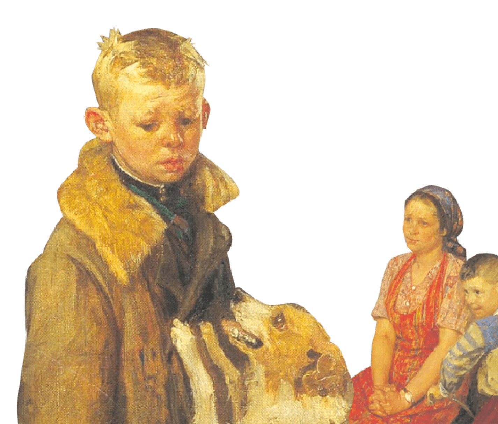
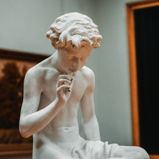
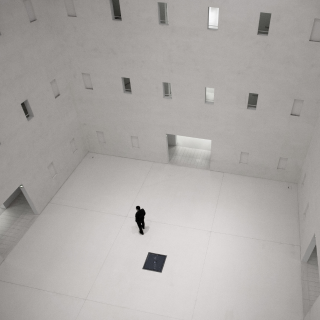
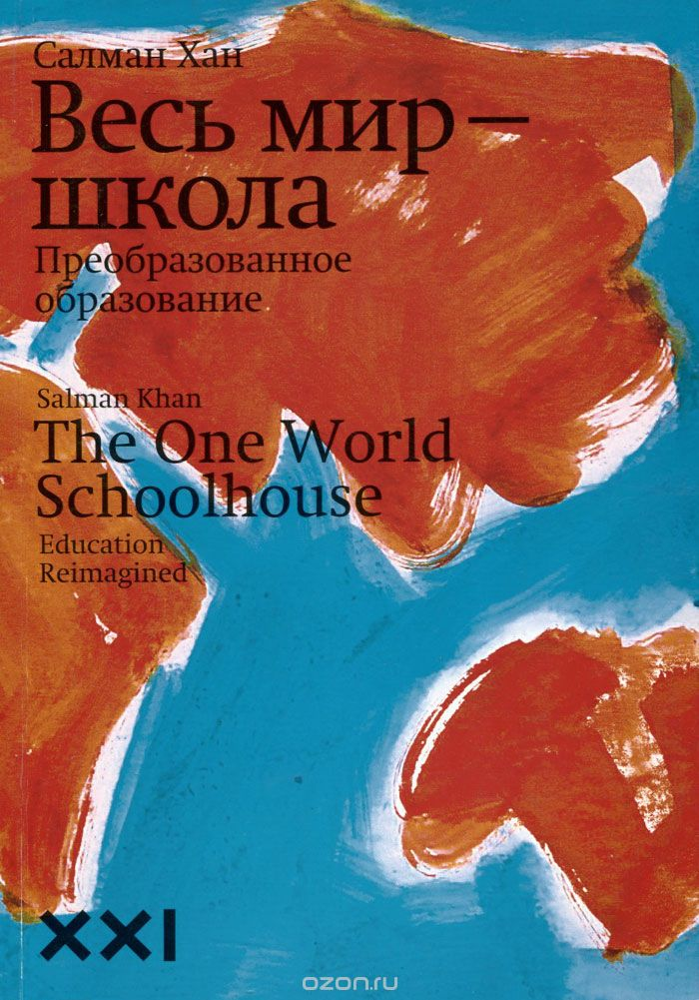
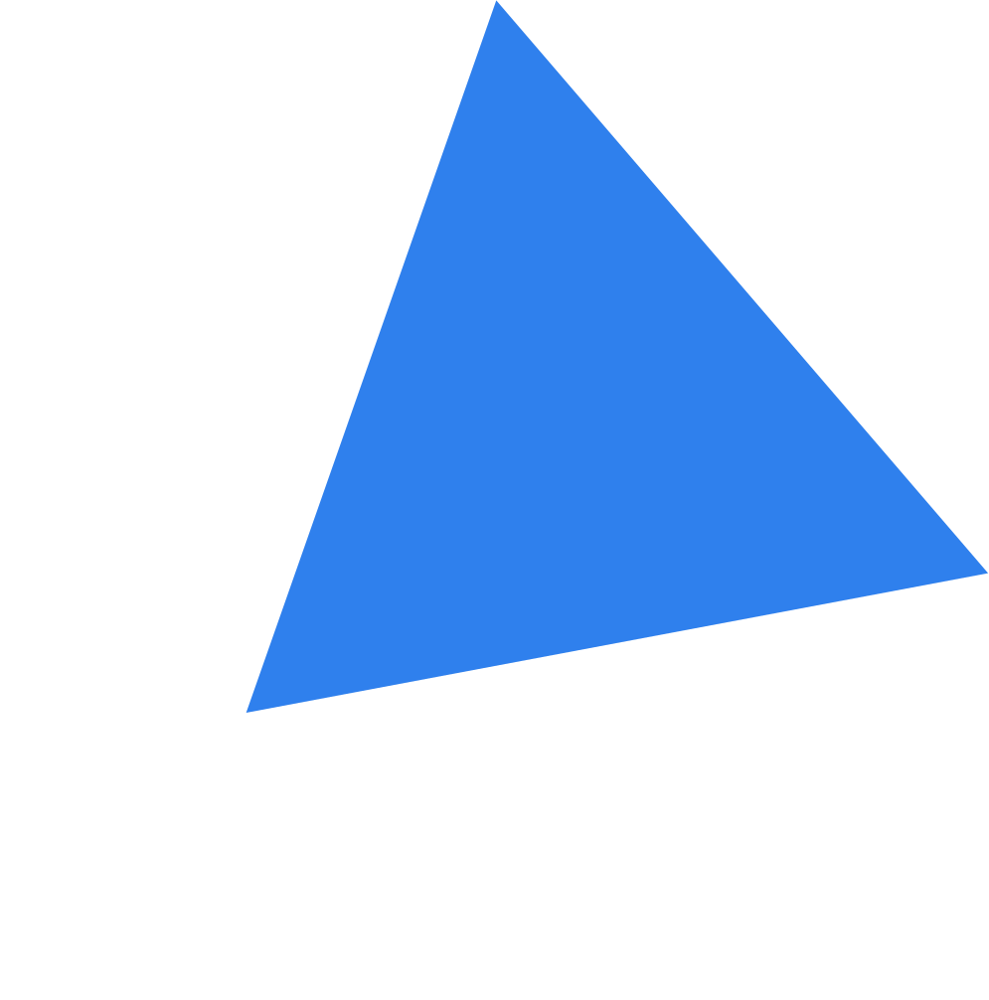

Два вида внимания
Глубокие знания возникают, если чередовать сфокусированное и рассеянное мышление.
Какие современные и эффективные подходы к обучению вы можете использовать в своей жизни? Узнать →

Ни в школе, ни в институте нас не учат тому, как правильно изучать материал. Мы готовимся к экзаменам и учим билеты. Мы тренируемся решать однообразные задачи, чтобы лучше сдать тест, но часто в итоге это не дает нам реального знания. Зубрежка быстро выветривается и не приносит пользы.
Вывод: учиться тоже нужно уметь, но почему-то этому мало где учат. Что с этим делать?
Конкретные техники и упражнения помогают изменить подход к обучению, сделать его эффективным и захватывающим. Эти же техники применяются на примере обучения в Практикуме.
Пять практик от Барбары Оакли
Глубокие знания возникают, если чередовать сфокусированное и рассеянное мышление.

Вспоминайте изученное — это позволит соединить разрозненные порции памяти.
Изучайте несколько навыков одновременно, они обогащают друг друга.

Слушая преподавателя, придумывайте хороший вопрос, который вас действительно волнует.
Повторите про себя, запишите, расскажите другу: вам только кажется, что вы владеете новой темой.
Для тех, кто любит прокрастинировать
С детства Барбаре не давалась математика. Она считала себя законченным гуманитарием, причём далеко не самым умным. В армии она изучала русский язык, чтобы получить надбавку, да так успешно, что её выдвинули в командиры. Но для продвижения по службе нужно было сдавать математику. И тогда Барбара придумала свой подход к точным наукам.
Оказалось, если вам что-то «плохо даётся», ваши добытые трудом знания гораздо глубже, чем у тех, кому всё ясно с первого взгляда.
Выучить и не забыть.
Подробнее →Про учёбу и мозг
Нейронов в мозге человека.
Число нуждающихся в повышении квалификации. Всемирный Банк, 2017.
Объём памяти мозга, по некоторым оценкам.
Число ответственных за обучение нервных синапсов у взрослого человека.
Взрослых людей моложе 25 лет не имеют образования для трудоустройства. Всемирный Банк, 2017.
Пик обучаемости.
Открытие кривой забывания.
Открытие условного рефлекса.
Страсть и новаторство Сала Хана меняют процесс обучения миллионов студентов по всему миру. Книгу «Весь мир — школа» нужно прочитать всем, кто занимается образованием — так учащиеся повсюду смогут получить навыки и знания, которые приносят успех в школе, карьере и жизни.

От Джоша Кауфмана
Выберите привлекательный проект.
Сосредоточьтесь на одном навыке.
Определите целевой уровень мастерства.
Разбейте навык на элементы.
Приготовьте всё необходимое для занятий.
Устраните препятствия для занятий.
Выделите специальное время для занятий.
Создайте быстрые петли обратной связи.
Занимайтесь по расписанию, короткими интенсивными интервалами.
Уделяйте внимание количеству и скорости.

Больше материалов о техниках и лайфхаках обучения